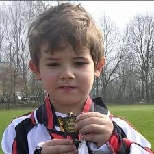
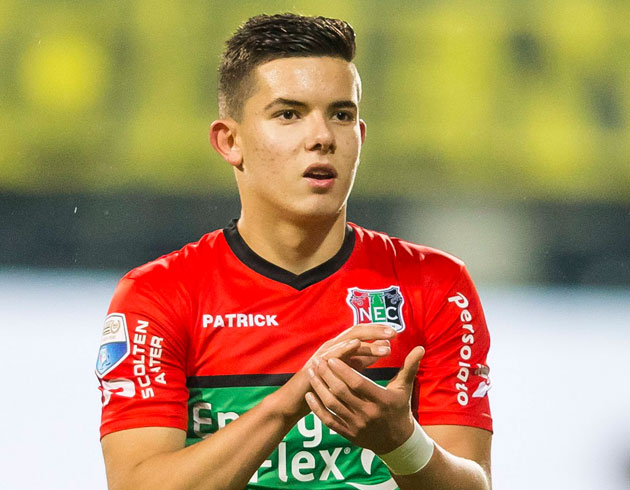
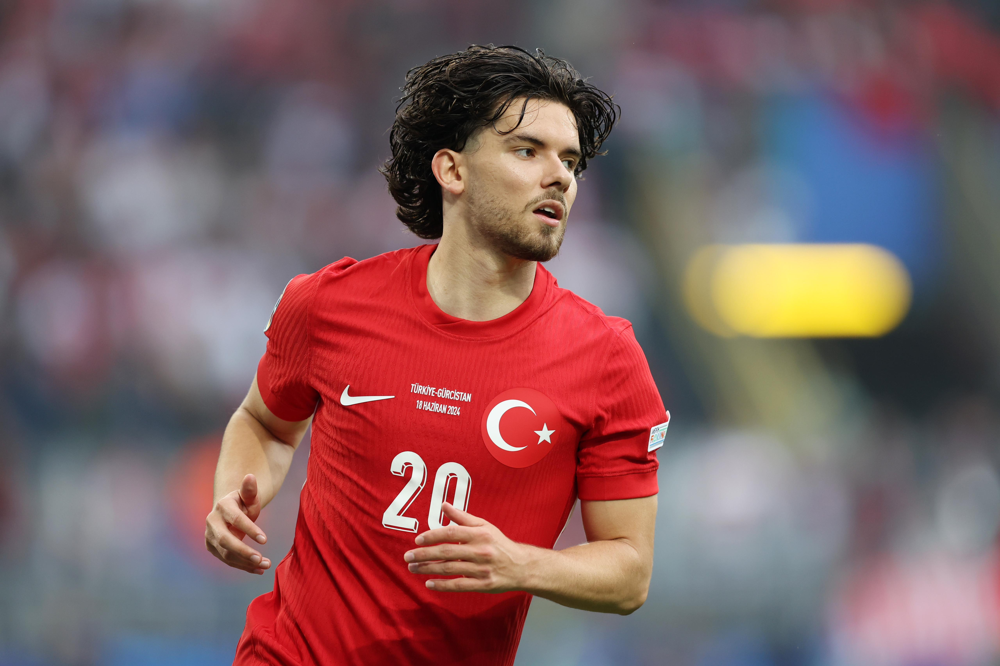
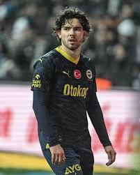

Giriş
Ferdi Kadıoğlu, Türk futbolunun son dönemlerdeki en dikkat çeken yeteneklerinden biri. Genç yaşına rağmen gösterdiği performansla hem kulüp takımı hem de milli takım için önemli bir oyuncu haline geldi. Bu yazıda Ferdi Kadıoğlu’nun kariyerine, yeteneklerine ve futbol dünyasındaki yerine odaklanacağız.
Gençlik Yılları ve Eğitim
Ferdi, 2 Ekim 1999 tarihinde Almanya’nın Essen şehrinde dünyaya geldi. Futbola olan ilgisi küçük yaşlarda başladı ve genç yaşta futbol akademilerine katıldı. Bu süreçte, teknik becerilerini geliştirmesi ve oyunun temel kurallarını öğrenmesi için önemli fırsatlar yakaladı.

Profesyonel Kariyer
Ferdi, 2016 yılında Vitesse Arnhem takımında profesyonel sözleşme imzaladı. Burada geçirdiği süre zarfında dikkat çekici bir performans sergileyerek, Avrupa'nın çeşitli kulüplerinin radarına girmeyi başardı. 2020 yılında Fenerbahçe'ye transfer olan Kadıoğlu, burada kariyerinin en parlak dönemlerinden birini yaşadı.

Oyun Tarzı ve Yetkinlikler
Ferdi Kadıoğlu, teknik becerileri ve oyun zekasıyla ön plana çıkıyor. Hızlı ayakları ve dripling yeteneği, onu savunmalara karşı etkili bir tehdit haline getiriyor. Ayrıca, hem kanat oyuncusu hem de orta saha olarak oynama kabiliyeti, takıma esneklik sağlıyor. Bu çok yönlülüğü, onu değerli bir oyuncu yapıyor.
Milli Takım Kariyeri
Ferdi, Türkiye U21 takımında oynadıktan sonra A milli takımda da forma giymeye başladı. 2021’deki maçlarla birlikte, milli formayı giymek onun için büyük bir onur oldu. Genç yaşına rağmen uluslararası alanda deneyim kazanarak, gelecekte Türk futbolunun önemli bir parçası olma yolunda ilerliyor.

Gelecek Beklentileri
Ferdi Kadıoğlu’nun kariyeri henüz başında olsa da, gelecekteki potansiyeli büyük. Hem kulüp kariyerinde hem de milli takımda daha fazla başarı elde etmesi bekleniyor. Özellikle Avrupa’nın büyük liglerinde oynama hayali, onun motivasyonunu artırıyor.
Sonuç
Ferdi Kadıoğlu, yetenekleri ve azmiyle Türk futbolunda dikkat çekici bir yer edinmiş durumda. Gelecek yıllarda onu daha da büyük başarılarla görmek mümkün. Takipte kalmakta fayda var; çünkü bu genç yıldızın kariyeri yeni başlıyor.
